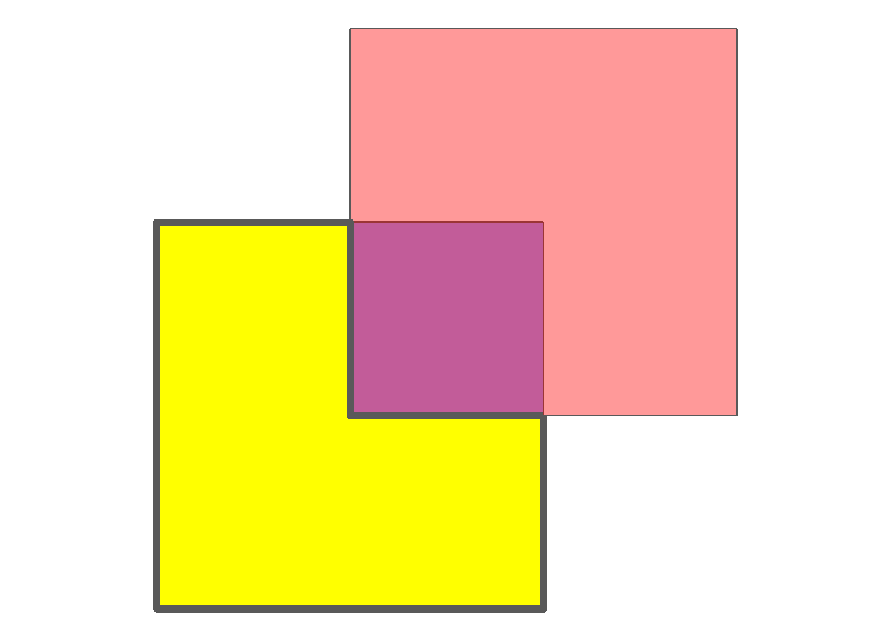

6.2 Density Toolset
6.2.1 Kernel Denisity
There are several Function that can be tweaked to calculate KDE for sf-Point object:
tmaptools::smooth_map(): Depricated (is there a successor?)spatstat::density.ppp(): Takes only objects of ClasspppMASS::kde2d(): Takes x/y coordinates as vectors and returns a matrix
In this example, I take MASS:kde2d() and tweak it to take sf and return raster. First, let’s create some sample data:
set.seed(10)
mypoints <- data.frame(x = rnorm(1000),y = rnorm(1000)) %>%
st_as_sf(coords = c(1,2))
plot(mypoints)
my_kde <- function(points,cellsize, bandwith, extent = NULL){
require(MASS)
require(raster)
require(sf)
if(is.null(extent)){
extent_vec <- st_bbox(points)[c(1,3,2,4)]
} else{
extent_vec <- st_bbox(extent)[c(1,3,2,4)]
}
n_y <- ceiling((extent_vec[4]-extent_vec[3])/cellsize)
n_x <- ceiling((extent_vec[2]-extent_vec[1])/cellsize)
extent_vec[2] <- extent_vec[1]+(n_x*cellsize)-cellsize
extent_vec[4] <- extent_vec[3]+(n_y*cellsize)-cellsize
coords <- st_coordinates(points)
matrix <- kde2d(coords[,1],coords[,2],h = bandwith,n = c(n_x,n_y),lims = extent_vec)
raster(matrix)
}## Loading required package: MASS##
## Attaching package: 'MASS'## The following objects are masked from 'package:raster':
##
## area, select## The following object is masked from 'package:dplyr':
##
## select## Warning: package 'stars' was built under R version 3.6.1## Loading required package: abindggplot() +
geom_stars(data = st_as_stars(mypoints_kde)) +
geom_sf(data = mypoints, alpha = 0.2, fill = "black") +
scale_fill_viridis_c() +
labs(fill = "KDE") +
theme_void() 